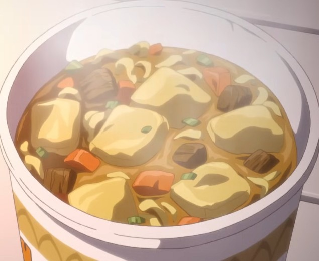
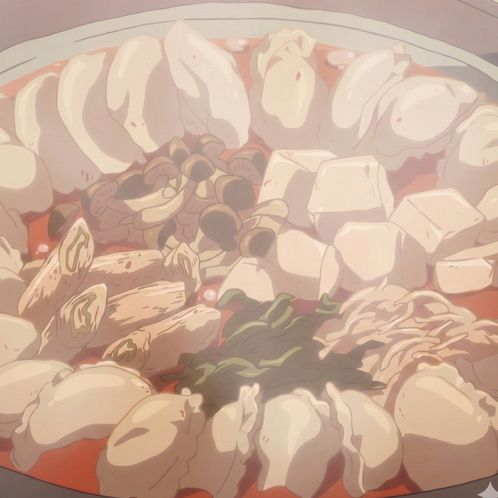
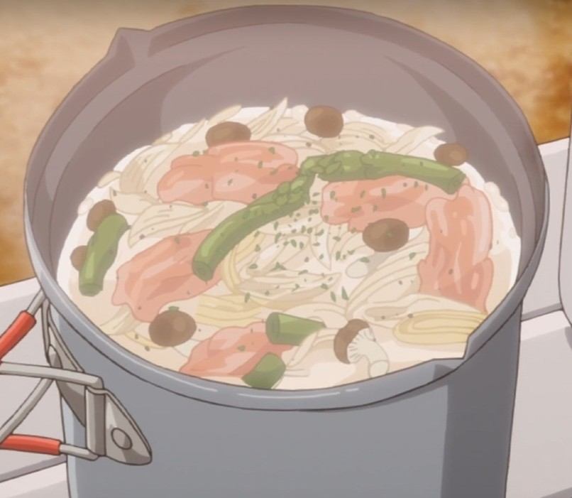
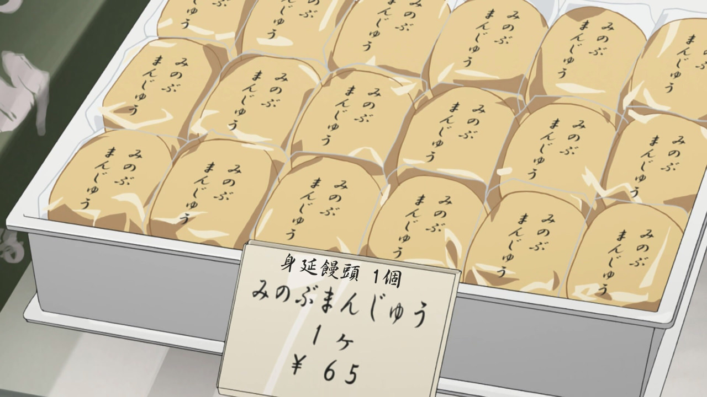

🍜 咖哩泡麵
登場：S1 第1話
一切的起點，凜分給飢腸轆轆的撫子的一碗泡麵。
雖然只是普通的日清咖哩杯麵，但在寒冷的本栖湖畔，這就是世界上最美味的食物。
🛒 準備食材：
- 日清咖哩口味杯麵
- 熱水(建議自備爐具或保溫瓶)

🥟 擔擔餃子鍋
登場：S1 第3話
撫子在富士山麓露營場做給凜吃的料理。
使用市售的冷凍餃子和擔擔鍋湯底，簡單又溫暖，微辣的口味非常適合在冬天享用。
🛒 準備食材：
- 冷凍餃子
- 豆腐、蔬菜(蔥、白菜、韭菜、豆芽菜、香菇)
- 擔擔鍋湯底(雞高湯、辣椒醬)
- 瓦斯爐/鍋具

🍝 義大利湯麵
登場：S1 第5話
凜在單人露營時做的獨享料理。將義大利麵折斷放入濃湯中煮，最後撒上滿滿的起司與黑胡椒，是懶人的極致美味。
🛒 準備食材：
- 義大利麵
- 培根、蔬菜(蒜頭、洋蔥、蘆筍、鴻喜菇)、橄欖油
- 濃湯湯底(水、牛奶、濃湯塊、起司、黑胡椒)
- 瓦斯爐/鍋具

🍘 身延饅頭
登場：S1 第8話
身延車站前的老字號「榮昇堂」。甜而不膩的内餡與鬆軟的外皮，價格親民。撫子曾創下在此一口氣狂吃十個的紀錄。
🛒 購買資訊：
- 地點：身延站前商店街
- 推薦搭配：熱茶或冰茶
更多美食待整理...
- S1 EP.7 - 烤肉、鱈魚燉鍋
- S1 EP.9 - 迷你醬汁豬排飯
- S1 EP.11 - S'more(烤棉花糖夾心餅乾)
- S1 EP.11 - 蕃茄壽喜燒
- S2 EP.2 - 抹茶提拉米蘇 & 綠茶套餐
- S2 EP.3 - 濱名湖特上鰻魚飯
- S2 EP.7 - 五味時雨燒
- S2 EP.10 - 紅金眼鯛漢堡
- S2 EP.11 - 土鍋蒜味蝦
- S2 EP.11 - 紅金眼鯛湯意大利麵
- S2 EP.12 - 海鮮澆湯蓋飯
- ⋯⋯
👨🍳 小提醒：在高海拔時水的沸點較低（約96-98度），煮義大利麵時建議多煮一分鐘，才不會吃到硬硬的麵芯喔！